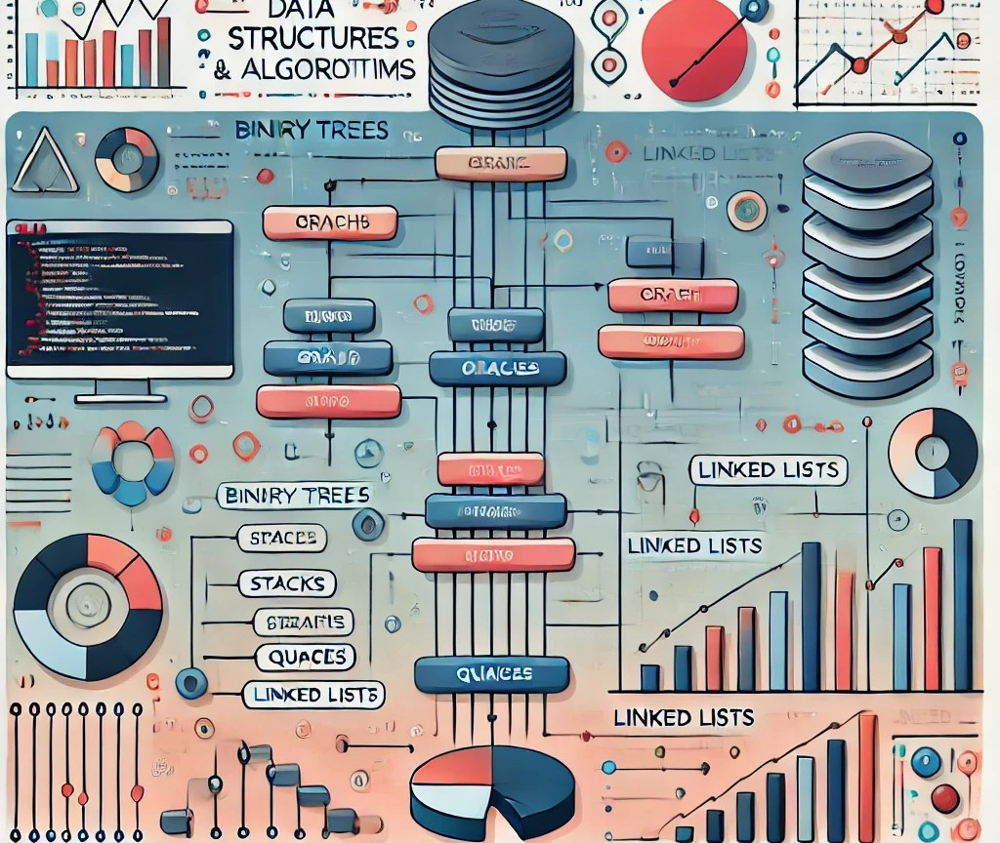

DSA Course
Data Structures and Algorithms (DSA) are fundamental concepts in computer science used to efficiently organize, manage, and process data. They are crucial for developing optimized programs and solving computational problems effectively.
Instructor

Utkarsh Jain
Data Structures & Algorithm Expert
Course Overview
Data Structures and Algorithms (DSA) are foundational concepts in computer science that help in organizing, storing, and manipulating data efficiently. A data structure refers to a specific way of organizing and storing data in the computer to access and modify it effectively. Examples include arrays, linked lists, stacks, queues, trees, and graphs, each serving distinct purposes depending on the problem at hand. On the other hand, algorithms are step-by-step procedures or formulas used to solve problems, often working hand-in-hand with data structures to ensure optimized performance for specific tasks, such as sorting, searching, and graph traversal.
Data structures such as arrays provide a simple, fixed-size, contiguous memory allocation, ideal for fast access by index. More complex structures like linked lists allow dynamic memory allocation where each element points to the next, facilitating efficient insertion and deletion. Stacks and queues are specialized structures used for managing data in LIFO (Last In, First Out) and FIFO (First In, First Out) order, respectively, commonly used in various applications such as recursion, job scheduling, and process management.
Algorithms leverage these data structures to solve problems efficiently. For example, sorting algorithms like QuickSort and MergeSort allow for the rearrangement of elements in a particular order, whereas searching algorithms like Binary Search enable the fast retrieval of elements from sorted data. Graph algorithms are used for problems related to networks, such as finding the shortest path between nodes or exploring connected components. Dynamic programming and greedy algorithms are optimization techniques that solve complex problems by breaking them down into smaller subproblems, with dynamic programming storing intermediate results to avoid redundant calculations.
The study of DSA not only teaches developers how to use existing data structures and algorithms but also how to analyze the performance of algorithms using Big O notation, which describes the time and space complexity of algorithms. This enables developers to choose the most suitable algorithms and data structures for a given problem, ensuring that solutions are both efficient and scalable. For instance, an algorithm with time complexity of O(n^2) may work for smaller datasets but become impractical for larger datasets, making it crucial to understand the trade-offs involved.
Finally, DSA is crucial in computer science education and technical interviews. Mastery of these concepts is often a key factor in landing jobs at tech companies, where problem-solving skills and the ability to optimize solutions are highly valued. In real-world applications, DSA ensures that systems can handle large volumes of data and operate efficiently, making it an indispensable part of software development, from web applications to artificial intelligence and machine learning algorithms.
What you'll learn
Basic Data Structures: Arrays, linked lists, stacks, queues, trees, and graphs.
Operations: Insertion, deletion, and traversal of data structures.
Sorting Algorithms: QuickSort, MergeSort, Bubble Sort.
Searching Algorithms: Linear and Binary Search.
Graph Algorithms: DFS, BFS, Dijkstra’s Algorithm.
Dynamic Programming: Solving problems by breaking them into subproblems.
Greedy Algorithms: Making optimal choices at each step.
Divide and Conquer: Breaking problems into smaller subproblems.
Complexity Analysis: Evaluating algorithms using Big O notation.
Problem-Solving: Enhancing coding and interview skills.
This course includes:
240 hours video
1956 articles
Downloadable resources
Full lifetime resources
Access on Mobile
Assignments
Valuable Projects
Certificate of completion
Stipend